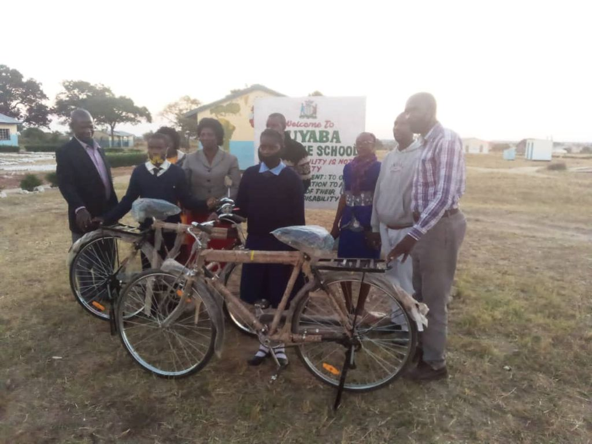
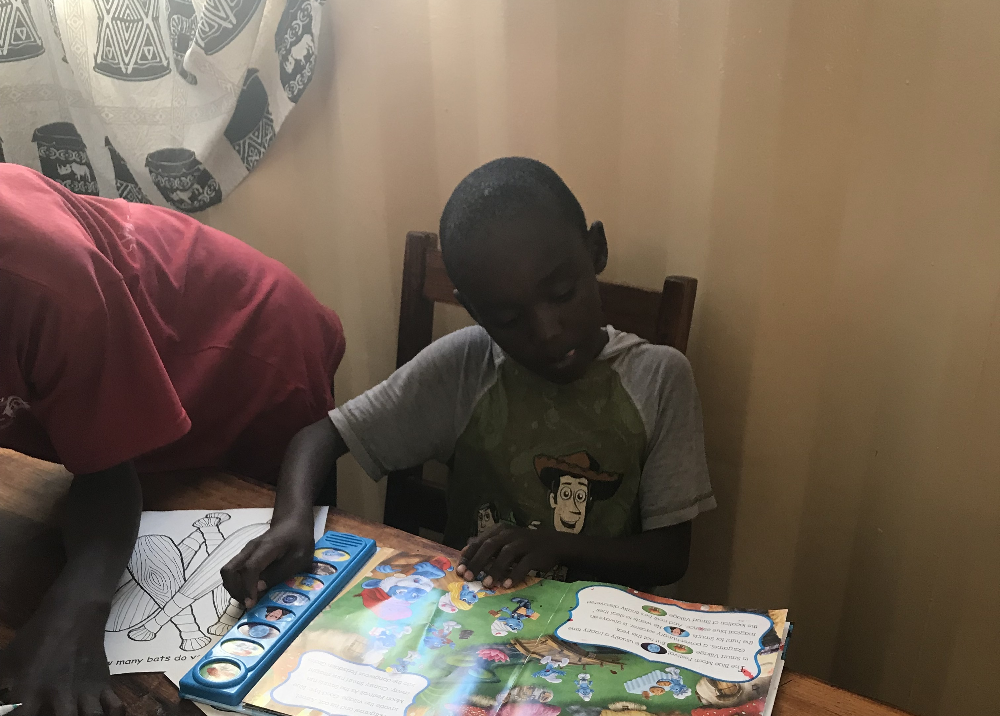
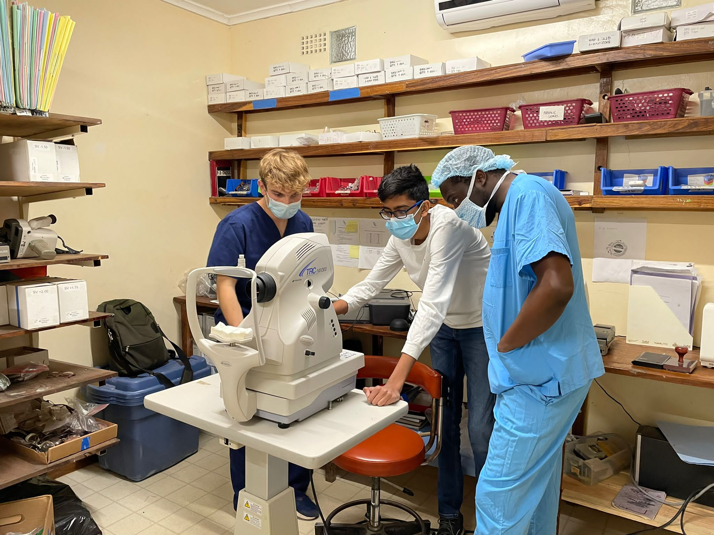

We were able to set up the first robotics class in Zambia by partnering with two local secondary schools.
At the schools, we taught rudimentary robotics principles using EV3 LEGO Mindstorms and Spike Prime robots.
We explained the purpose of various hardware components such as the motors and sensors.
Furthermore, we taught the students how to program the robots using scratch.
They quickly grasped the programming concepts and were able to complete various challenges with the robots.
We were able to set up the first robotics class in Zambia by partnering with two local secondary schools.
At the schools, we taught rudimentary robotics principles using EV3 LEGO Mindstorms and Spike Prime robots.
We explained the purpose of various hardware components such as the motors and sensors.
Furthermore, we taught the students how to program the robots using scratch.
They quickly grasped the programming concepts and were able to complete various challenges with the robots.
 Zambia is currently facing major deforestation.
As a result, in our 2023 trip, we went to a local school to teach the students about deforestation and its harmful effects to the environment.
Afterwards, we helped to plant over 100 trees at the school.
These trees will provide the students with a source of food and the school with an extra source of income to better the education they provide.
Zambia is currently facing major deforestation.
As a result, in our 2023 trip, we went to a local school to teach the students about deforestation and its harmful effects to the environment.
Afterwards, we helped to plant over 100 trees at the school.
These trees will provide the students with a source of food and the school with an extra source of income to better the education they provide.

In the USA, many people believe biking is a fun, recreational activity.
However, in rural Zambia and other locations in Africa, it is one of the main modes of transport and in some cases considered a luxury.
Many families can live 3 - 8 miles away from the nearest schools and markets.
Thus, making it a challenge for children to get a quality, stable education and parents to get necessary food and supplies.
Our organization has already funded for multiple bicycles to be sent to families living in rural African villages.
However, there are still numerous families that cannot afford bicycles and make the tiring journey to schools or to the market everyday.
We ask for your assistance to help our organization fund more bicycles and make a difference in a families life.
Additionally, we have developed a system to produce electricity while pedaling a bicycle. This electricity can be stored in a battery pack and used after dusk to power a light bulb. This results in the family getting 1-2 more hours of productive work time. The children can focus more on completing school work whereas the parents can work more on house or job tasks. We have brought our system to Zambia and hope to implement it on the donated bicycles.
Additionally, we have developed a system to produce electricity while pedaling a bicycle. This electricity can be stored in a battery pack and used after dusk to power a light bulb. This results in the family getting 1-2 more hours of productive work time. The children can focus more on completing school work whereas the parents can work more on house or job tasks. We have brought our system to Zambia and hope to implement it on the donated bicycles.

Many of us take having access to instant information from our phones or computers for granted.
In Zambia, many children do not have access to the internet, television, or even books.
They get receive of their knowledge from school, but they are still hungry for more.
By donating used children books to our organization, you can help set up a library for children in Zambia.
UjwalUSA has already donated over 700 books and a computer to help set up a local library.
This provides the children with a fun place to hangout with their friends after school.
From past experience, we noticed that many take advantage of the library.
Dozens of children come to the library, day after day, fascinated by every new book they read.

Contrary to what many may think, vision impairments affect a large amount of rural Zambia population.
Unlike many of us, they are not able to recieve regular checkups and get the proper eyeglasses.
To counteract this issue, UjwalUSA has paired up with a local ophthalmologist practice to donate used glasses.
We have already collected hundreds of eyeglasses.
Additionally, we have developed an app during a Hackathon event to help quickly and cheaply identify eye strains.
With the eyeglasses and app, we traveled to Zambia and helped eye doctors and surgical technicians provide checkups to residents.
To aid this effort, we ask for you to donate your old glasses to us.